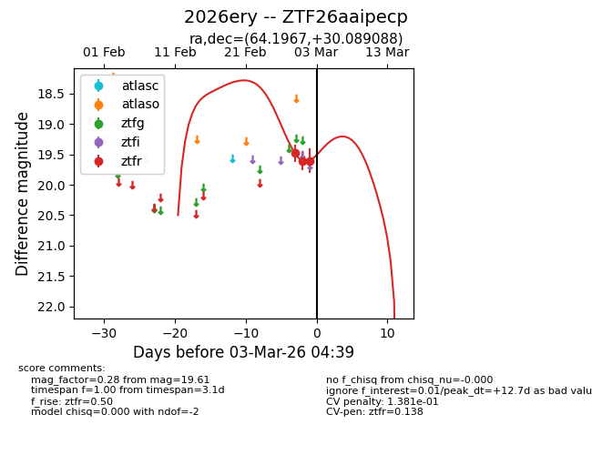
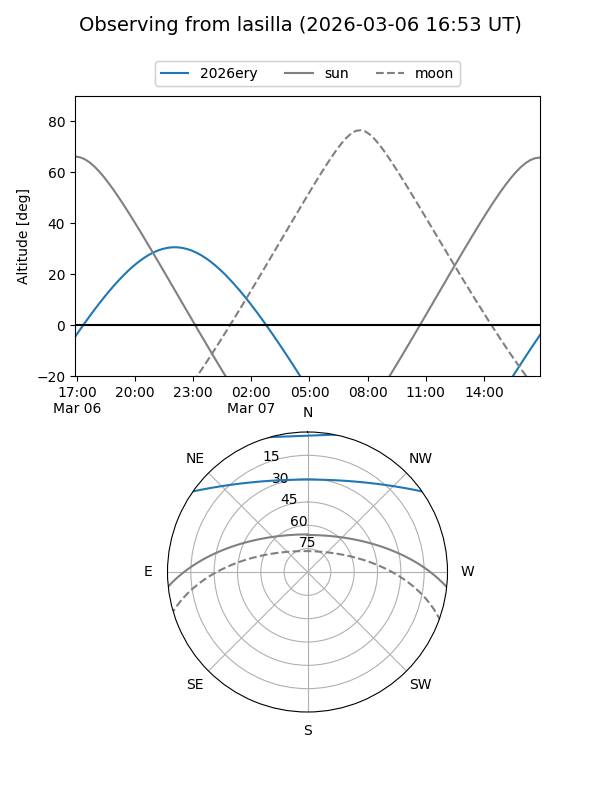
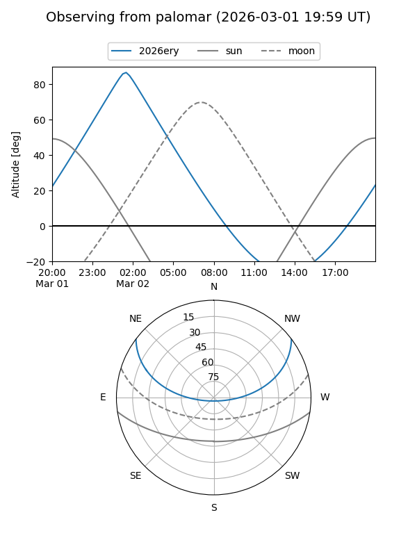
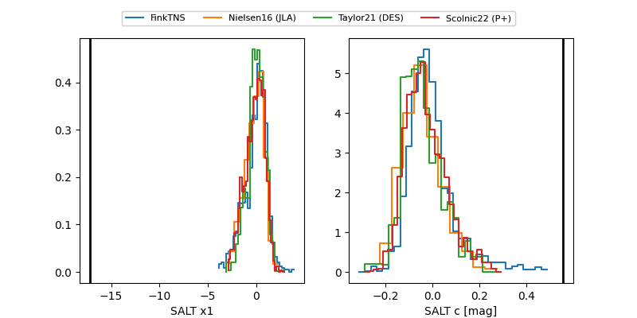

2026ery
Target 2026ery at 2026-03-03 04:40
Aliases and brokers:
FINK: link
Lasair: link
ALeRCE: link
TNS: link
YSE: link
alt names
ZTF26aaipecp (ztf,fink_ztf)
2026ery (tns,yse)
Coordinates:
equatorial (ra, dec) = 64.1967,+30.08909
equatorial (HMS+DMS) = 04:16:47.20,+30:05:20.72
galactic (l, b) = (167.2177,-14.62421)
Flags:
likely cv
Photometry:
last ztfr=19.61
3 ztfr detections
Lightcurve

Visibility


Additional plots
